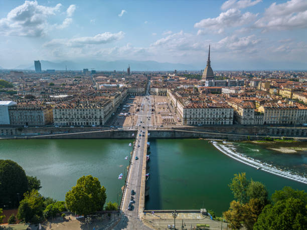

For the first 20 years of my life, Turin was my home. This lively city, located between the Po River and the Alps, has always been more than just a spot on the map to me. Turin’s mix of history, culture, and modern life influenced my upbringing and played a big role in shaping who I am today.
As the capital of the Piedmont region and once Italy's first capital, Turin has an important place in Italian history. Called the "cradle of Italian liberty," it played a key role in the Risorgimento, which led to the unification of Italy. Walking through its streets, I was constantly reminded of its rich past, with figures like Count Cavour who helped shape the nation. Despite its deep history, Turin is also a modern city, part of Italy's industrial triangle with Milan and Genoa, and a center for innovation, business, and trade..
Growing up in Turin meant living in a city that beautifully blends the old with the new. It's a place where historic palaces sit alongside modern art spaces, and the busy city life is complemented by peaceful views of the Alps and the rolling hills of Superga. Turin has always inspired me, providing the perfect setting for my early education and life experiences.
In 2020, I decided to move to Denmark, starting a new chapter in my life that brought exciting opportunities for personal and professional growth. Even though Denmark is now my home, Turin will always be where my roots are – a place filled with memories, history, and a lasting impact on who I am today.